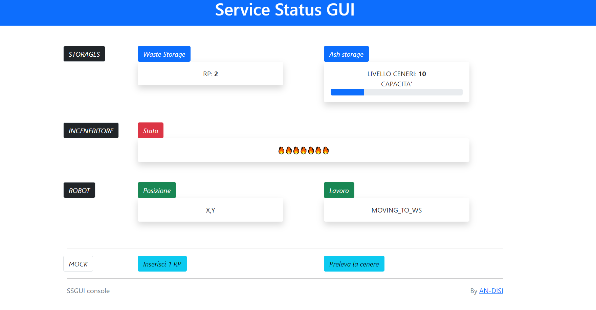

Architettura Logica
Immagine architettura
Progetto
Come accennato nell'analisi del problema, si è realizzata una WEB-GUI. Per progettarla è stato utilizzato Spring
Boot.
Il progetto della GUI si divide in due parti:
-
Parte statica: l'impostazione della pagina HTML.
-
Parte dinamica: permette all’applicazione Web di interagire da un lato con utente umano e da un
altro lato con una applicazione qak.
Parte Statica

SSGUI.html
Inoltre, nel file
wsminimal.js sono state
inserite le funzioni che permettono di aggiornare i valori sull'interfaccia, così come le funzioni per
aggiungere un RP e prelevare la cenere.
Parte dinamica
Per la parte dinamica sono stati riutilizzati alcuni componenti del progetto Facade24Start poichè ritenuti
adeguati. Quelli che è stato necessario adattare al
WIS sono:
ActorOutIn
Crea la connessione TCP all’attore del sistema applicativo
Esso viene utilizzato per 2 tipi di interazioni:
- Aggiornare la WEB-GUI con i valori corretti del sistema attuale, inviando a tutte le GUI le informazioni
aggiornate tramite il WSHandler
public void sendToOne(IApplMessage msg) {
wsHandler.sendToOne(msg);
}
public void sendToOne(String msg) {
wsHandler.sendToOne(msg);
}
public void sendToAll(String msg) {
wsHandler.sendToAll(msg);
}
- Realizzare i comandi per il Mock, le funzioni di inserimento e prelievo di un RP su decisione
dell'utente ( funzioni non da requisiti, solo per testing )
public void docmd( IApplMessage message ) {
CommUtils.outmagenta("OUTIN | docmd message=" + message );
sendToActor( message );
}
private void sendToActor(IApplMessage message ) {
String response = this.sendApplMsg(message);
}
ApplGuiCore
Rappresenta il core business della GUI. Ha la responsabilità di decidere cosa fare per ogni messaggio di input e
come inviare informazioni in uscita attraverso l’adapter ActorOutIn.
Utilizzato per gestire le richieste provenienti dal Mock
public void handleWsMsg(String id, String msg) {
CommUtils.outcyan("AGC | handleWsMsg msg " + msg );
JSONObject jsonMsg = new JSONObject(msg);
boolean isCmd = jsonMsg.has("cmd");
if(jsonMsg.has("mock_deposit")){
IApplMessage message = CommUtils.buildDispatch("gui23xyz9526", "mock_deposit", "mock_deposit(1)" , "wis");
outinadapter.docmd( message );
return;
}
else if(jsonMsg.has("mock_remove")){
IApplMessage message = CommUtils.buildDispatch("gui23xyz9526", "mock_remove", "mock_remove(1)" , "wis");
outinadapter.docmd( message );
return;
}
}
Interazioni
OpRobot → Wis
Dato che la GUI deve mostrare la posizione ed il lavoro corrente di
OpRobot, è necessario che queste
informazioni vengano inviate al
Wis. Per questo motivo è stato aggiunto il messaggio:
robot_info: robot_info(X,Y,POSITION,JOB)
Wis → GUI
Per aggiornare la GUI affinchè rispecchi i cambiamenti dl sistema, è stato necessario introdurre un nuovo
messaggio:
guidata: guidata(WASTE_QTY,ASH_LEVEL,ISBURNING,X,Y,POSITION,JOB)
Ogni volta che uno dei dati all'interno del messaggio cambia, il
CoapObserver
cattura l'updateResource inviato dal
Wis.
Mock
L'attore Mock che a cicli di tempo predefiniti andava ad inserire/prelevare RP dai due storage è stato
rimosso.
Per semplicità, l'entità esterna che si occupa del deposito di RP e del prelievo di cenere viene simulata
tramite la pressione di due bottoni sulla GUI. A questo punto, ActorOutIn confeziona un IApplMessage msg e
chiama sendToActor(IApplMessage message)
Deployment
Per il deployment del progetto, sono state inserite le seguenti linee di codice nel file
corebusiness.qak
Facade robotfacade port 8060 usingactor wis inctx ctx_wis
appl "main.java.sprint3_progetto_ssgui.Sprint3ProgettoSsguiApplication"
UserLibs -f "sprint3_progetto_ssgui-1.0-plain" -f "sprint3_progetto_ssgui-1.0"
Che permette di avviare la GUI assieme al Core Business.
Inoltre, i due jar "sprint3_progetto_ssgui-1.0-plain" e "sprint3_progetto_ssgui-1.0", sono stati creati dopo aver
eseguito il comando:
gradlew distZip
nella directory della gui ed aggiungerli ad
unibolibs.
A questo punto, come nello sprint precedente, si vanno a creare i file
wis.bat e
monitoringdevice.bat tramite i comandi:
gradlew distZip
gradlew distZip -Pbuild_MD
Quest'ultimo verrà eseguito dal RaspberryPI.
Infine è necessario avviare il file
basicRobot.bat che
avvia l'immagine docker del WEnv ed
imposta la stanza impostata nel file sceneConfig.js.
By Alessandro Piombini & Danilo Cavallini
Email:
-
alessandro.piombini@studio.unibo.it
-
danilo.cavallini@studio.unibo.it
GIT repo: https://github.com/Piombo4/ISS2024-WIS